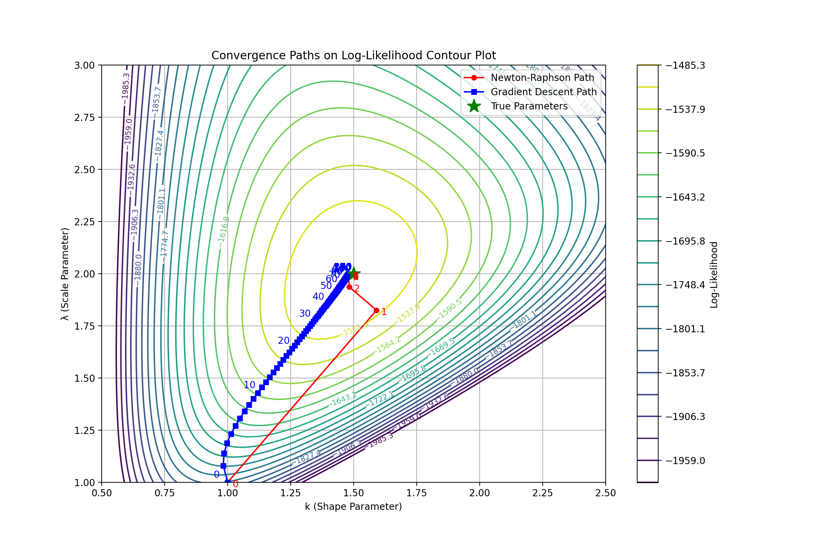

A scalar-valued function maps a vector to a scalar: \(f: \mathbb{R}^n\to\mathbb{R}\)
A vector-valued function maps a vector to a vector: \(F:\mathbb{R}^n\to\mathbb{R}^m\)
Gradient
The gradient of a scalar-valued function \(f:\mathbb{R}^n\to\mathbb{R}\) is a vector that contains all its first-order partial derivatives:
$$\nabla f(x)=\begin{vmatrix}
\frac{\partial f}{\partial x_1}\\
\frac{\partial f}{\partial x_2}\\
\vdots \\
\frac{\partial f}{\partial x_n}
\end{vmatrix}$$
The gradient evaluated at a point, gives the direction of the steepest increase of the function
The critical points occur where \(\nabla f(x)=0\)
Jacobian
The Jacobian generalizes the derivative to vector-valued functions. For a vector function \(F:\mathbb{R}^n\to\mathbb{R}^m\), the Jacobian is an \(m\times n\) matrix of first-order partial derivatives
$$J(F)(x)=\begin{bmatrix} \frac{\partial F_1}{\partial x_1} & \frac{\partial F_1}{\partial x_2} & \dots & \frac{\partial F_1}{\partial x_n} \\
\frac{\partial F_2}{\partial x_1} & \frac{\partial F_2}{\partial x_2} & \dots & \frac{\partial F_2}{\partial x_n}\\
\vdots & \vdots & \ddots & \vdots \\
\frac{\partial F_m}{\partial x_1} & \frac{\partial F_m}{\partial x_2} & \dots & \frac{\partial F_m}{\partial x_n}\end{bmatrix}$$
Hessian
The Hessian matrix is a square matrix of second-order partial derivatives of a scalar function \(f:\mathbb{R}^n\to\mathbb{R}\).
$$H(F)(x)=\begin{bmatrix}
\frac{\partial^2f}{\partial x_{1}^2} & \frac{\partial^2f}{\partial x_{1}\partial x_{2}} & \dots & \frac{\partial^2f}{\partial x_{1}\partial x_{n}}\\
\frac{\partial^2f}{\partial x_{2}\partial x_{1}} & \frac{\partial^2f}{\partial x_{2}^2} & \dots & \frac{\partial^2f}{\partial x_{2}\partial x_{n}}\\
\vdots & \vdots & \ddots & \vdots\\
\frac{\partial^2f}{\partial x_{n}\partial x_{1}} & \frac{\partial^2f}{\partial x_{n}\partial x_{2}} & \dots & \frac{\partial^2f}{\partial x_{n}^2}
\end{bmatrix}$$
A symmetric matrix A is positive definite if \(x^TAx\gt 0\) for all non-zero \(x\in\mathbb{R}^n\).
Negative Definitely
Simiarly, a symmetric matrix A is negative definite if \(x^TAx\lt 0\) for all non-zero \(x\in\mathbb{R}^n\).
Positive Semi-Definite Matrix
A symmetric matrix A is positive semi-definite if \(x^TAx\geq 0\) for all x. This allows for it to be equal to 0.
Eigenvalues
All positive eigenvalues for A means that it is positive definite.
All negative eigenvalues means that it is negative definite.
Example Implementation
Problem Set Up
We will use the Weibull distribution as an example. Its PDF is given by:
$$f(x;k,\lambda)=\frac{k}{\lambda}(\frac{x}{\lambda})^{k-1}e^{-(x/\lambda)^k}$$
import numpy as np
import matplotlib.pyplot as plt
from scipy.special import gamma, gammaln, psi # Gamma functions and digamma function
# True parameters
k_true = 1.5 # Shape parameter
lambda_true = 2.0 # Scale parameter
# Generate sample data
np.random.seed(0)
sample_size = 1000
data = np.random.weibull(k_true, sample_size) * lambda_true
def log_likelihood(params, data):
k, lam = params
if k <= 0 or lam <= 0:
return -np.inf # Log-likelihood is undefined for non-positive parameters
n = len(data)
ln_data = np.log(data)
term1 = n * np.log(k)
term2 = n * k * np.log(lam)
term3 = (k - 1) * np.sum(ln_data)
term4 = np.sum((data / lam) ** k)
ll = term1 - term2 + term3 - term4
return ll
def gradient(params, data):
k, lam = params
if k <= 0 or lam <= 0:
return np.array([0, 0]) # Return zero gradient for invalid parameters
n = len(data)
ln_data = np.log(data)
ln_x_over_lam = ln_data - np.log(lam)
x_over_lam = data / lam
x_over_lam_k = x_over_lam ** k
# Partial derivative with respect to k
dl_dk = (n / k) - n * np.log(lam) + np.sum(ln_data) - np.sum(x_over_lam_k * ln_x_over_lam)
# Partial derivative with respect to lambda
dl_dlam = (-n * k / lam) + (k * np.sum(x_over_lam_k * x_over_lam)) / lam
return np.array([dl_dk, dl_dlam])
def hessian(params, data):
k, lam = params
if k <= 0 or lam <= 0:
return np.array([[0, 0], [0, 0]]) # Return zero Hessian for invalid parameters
n = len(data)
ln_data = np.log(data)
ln_x_over_lam = ln_data - np.log(lam)
x_over_lam = data / lam
x_over_lam_k = x_over_lam ** k
ln_x_over_lam_squared = ln_x_over_lam ** 2
x_over_lam_squared = x_over_lam ** 2
# Second derivative with respect to k
d2l_dk2 = -n / k**2 - np.sum(x_over_lam_k * ln_x_over_lam_squared)
# Second derivative with respect to lambda
d2l_dlam2 = (n * k) / lam**2 - (k * (k + 1)) * np.sum(x_over_lam_k * x_over_lam_squared) / lam**2
# Mixed partial derivatives
d2l_dk_dlam = (-n / lam) + (np.sum(x_over_lam_k * (1 + k * ln_x_over_lam) * x_over_lam)) / lam
return np.array([[d2l_dk2, d2l_dk_dlam],
[d2l_dk_dlam, d2l_dlam2]])
def newton_raphson_multivariate(func, grad_func,
hess_func, x0, args=(), tol=1e-6, max_iter=100):
x = np.array(x0, dtype=float)
for i in range(max_iter):
grad = grad_func(x, *args)
hess = hess_func(x, *args)
if np.linalg.det(hess) == 0:
raise ValueError("Singular Hessian matrix.")
delta = np.linalg.solve(hess, grad)
x_new = x - delta
# Ensure parameters remain positive
x_new = np.maximum(x_new, 1e-6)
if np.linalg.norm(x_new - x) < tol:
print(f"Converged in {i+1} iterations.")
return x_new
x = x_new
raise ValueError("Maximum iterations reached without convergence.")
# Initial guesses
k_initial = 1.0
lambda_initial = 1.0
x0 = [k_initial, lambda_initial]
# Run Newton-Raphson method
params_estimated = newton_raphson_multivariate(
func=log_likelihood,
grad_func=gradient,
hess_func=hessian,
x0=x0,
args=(data,)
)
print(f"Estimated parameters (Newton-Raphson): k = {params_estimated[0]:.4f}, lambda = {params_estimated[1]:.4f}")
def gradient_descent(func, grad_func, x0, args=(), learning_rate=0.001, tol=1e-6, max_iter=10000):
x = np.array(x0, dtype=float)
for i in range(max_iter):
grad = grad_func(x, *args)
x_new = x + learning_rate * grad # Maximizing the function
# Ensure parameters remain positive
x_new = np.maximum(x_new, 1e-6)
if np.linalg.norm(x_new - x) < tol:
print(f"Converged in {i+1} iterations.")
return x_new
x = x_new
print("Maximum iterations reached without convergence.")
return x
# Initial guesses
k_initial = 1.0
lambda_initial = 1.0
x0 = [k_initial, lambda_initial]
# Run Gradient Descent method
params_estimated_gd = gradient_descent(
func=log_likelihood,
grad_func=gradient,
x0=x0,
args=(data,),
learning_rate=0.0001 # Adjust learning rate as needed
)
print(f"Estimated parameters (Gradient Descent): k = {params_estimated_gd[0]:.4f}, lambda = {params_estimated_gd[1]:.4f}")

Weibull Parameter Fitting Likelihood
While it's apparent that Newton's Method takes fewer steps than Gradient Descent, that doesn't necessarily mean that it is faster in terms of wall time. A gradient descent iteration takes less time than an interation of Newton's Method, so which method is faster is not so clear. For more complex cases, the Hessian becomes expensive to compute, which leads to it getting approximated into extensions to the method.
Multivariate Optimization Practice Problems
Minimize the function \( f(x, y) = x^2 + y^2 + 2xy - 4x - 6y + 9 \).
- Find the critical points by solving \( \nabla f(x, y) = 0 \).
- Classify the critical points as minima, maxima, or saddle points using the Hessian matrix.
Consider the likelihood function for a bivariate normal distribution \( f(x, y | \mu_x, \mu_y, \sigma_x, \sigma_y, \rho) \):
\[
f(x, y) = \frac{1}{2\pi\sigma_x\sigma_y\sqrt{1-\rho^2}}
\exp\left( -\frac{1}{2(1-\rho^2)} \left[ \frac{(x-\mu_x)^2}{\sigma_x^2} + \frac{(y-\mu_y)^2}{\sigma_y^2}
- 2\rho \frac{(x-\mu_x)(y-\mu_y)}{\sigma_x\sigma_y} \right] \right).
\]
- Write the log-likelihood function for a dataset \( \{(x_i, y_i)\}_{i=1}^n \).
- Derive the equations for \( \mu_x, \mu_y, \sigma_x, \sigma_y, \) and \( \rho \) that maximize the log-likelihood.
The negative log-likelihood for a bivariate exponential distribution with parameters \( \lambda_1 \) and \( \lambda_2 \) is given by:
\[
-\mathcal{L}(\lambda_1, \lambda_2) = \sum_{i=1}^n \left[ \lambda_1 x_i + \lambda_2 y_i - \ln(\lambda_1) - \ln(\lambda_2) \right].
\]
- Find the maximum likelihood estimates \( \hat{\lambda}_1 \) and \( \hat{\lambda}_2 \).